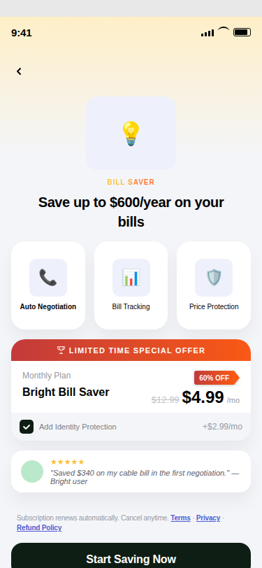

Bright Blueprint: writing our design system down until a machine could use it.
A PRD goes in, on-system wireframes come out. I rewrote Bright's design system as seven reference files an agent is required to read before it draws anything. Accuracy went from ten or twenty per cent to seventy or eighty in a fortnight.
The system had every answer. Nobody could recall all of it on a Tuesday.
A PRD lands, wireframes are needed in two days, and almost every screen in it already has an answer somewhere in Bright's design system. Somewhere means a Figma file with thousands of nodes, 335 icons, and a layer of convention that lives in people's heads.
So you wireframe from memory. Memory is fast. Memory is not 16px from the screen edge every time, on every screen, for six months.
A radio with the wrong border grey. A 20px gap where the scale goes 16 or 24. Individually invisible. Across a flow, it stops looking like it came out of the same file.
A design system a person reads and one a model reads are not the same artifact.
I already had a documented design system, and it was good documentation. It was also unusable by an agent, because it was written for someone who could look at a screen and know when something felt wrong.
A designer hits a gap in the docs and fills it with judgment. A model fills it with something plausible. Plausible is worse than blank, because plausible ships.
A Figma page called Spacing. You read it once, absorb the rhythm, stop looking.
Nine tokens on a 4px grid, four tiers, and a decision tree that terminates in exactly one variable name.
An icon library you browse and drag from. Finding the right one is a two minute job you do by eye.
All 335 paths inlined in one file, plus a rule: an icon not in that file does not exist.
Conventions you pick up from design review and from having been here a while.
The same conventions as hard rules, in files it must read before writing a line of markup.
Seven files, split by the question each one answers.
The split is by the moment in the build where you need it, not by topic. Icons are the division I like most: icons.md holds the rules and fits on a page, icon-paths.md holds 2,500 lines of raw geometry. Rules that must be read and data that must be looked up are different kinds of file. Merge them and the rule drowns in the data.
Every screen maps to one of thirteen canonical types, and to fifteen names, because different teams call the same screen different things. The system records the aliases instead of correcting anyone.
Each shell carries the Figma node it was measured from. When the skill and Figma disagree, there is a node ID to go argue with.
Every rule that matters is a prohibition.
Positive instructions get followed loosely. Prohibitions get followed exactly. Each of these exists because I watched the failure happen first.
Not "consult as needed". Skipping one produces output that is confidently wrong and hard to spot, because the rest of the screen looks correct.
No literal hex, no literal pixel gap. If a value is not on the 4px scale it is not a spacing decision, it is a mistake.
No Feather, no Material, ever. The most tempting shortcut and the one that instantly makes a wireframe read as not ours.
Type first, shell second, content third. An unclassified screen is a screen someone is about to invent a layout for.
A PRD goes in. The judgment and the drawing stay in separate hands.
The planning skill reads the PRD, maps branches, inventories the edge cases nobody writes down, and flags compliance risk. Then it produces the one artifact that matters: a table of every screen the feature needs, each assigned a type. Everything before that table is judgment. Everything after it is execution.
The planner is forbidden from drawing. The builder is forbidden from deciding.
Compliance sits in the planner's working memory rather than in a review at the end. Bright is a US fintech: "debt free" is out because Bright extends credit, and a specific saving claim requires a disclaimer. These were my review notes. Now they arrive before the screen exists.

Template eight, rendered off the real files. Only the copy and the numbers move; everything else is fixed structure. The placeholder glyphs in the feature cards are not Bright icons — exactly the failure the icon rule exists to catch.
Ten to twenty per cent accurate, to seventy or eighty, in a fortnight.
February's first version was bad in an instructive way: right shapes, wrong nearly everything else. Two weeks of writing the reference files properly closed the gap, and almost all of that closing was done by editing documents rather than by anything clever.
The minutes figure needs its qualifier, and I put the qualifier in the deck myself: the output is good up to alignment and not beyond it. It is a real first pass a PM can react to on the same call. It is not a finished screen.
Every number here is mine, scored against Bright's own token set and estimated against a Q4 2025 baseline. Nobody audited them. Treat the direction as right rather than the decimals.
Writing it for a machine is what showed me what I had wrong.
I went in expecting a documentation exercise. Instead, every ambiguity I had been quietly resolving by eye had to be resolved on paper, and some of them resolved against me.
Five selection-control values in my own reference files were wrong — radio borders, checkbox fill, switch on state — all drifted toward the brand green when the system uses near black. Nobody had caught it, because a designer looking at a radio button reads "selected" and moves on. An agent asked which token, and the token was wrong.
In May, design leadership made the project company nomenclature and the deck went to executives. A week later I handed iteration to a colleague and stepped off. A tool only its author can maintain has one point of failure.
The reference files and the deck are Bright's. The screen above is rendered from the real skill, but the design system it encodes is not mine to publish. Happy to walk the structure and do a live PRD to wireframe run, get in touch.